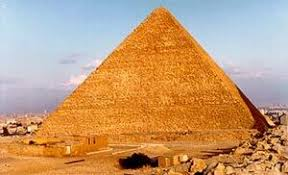
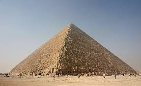
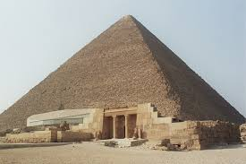

Piramida lui Kheops
Kheops (cca. 2538-2516 î.Hr.) a fost al doilea faraon al Dinastiei a IV, fiul lui Snefru. A controlat la fel de riguros ca și predecesorul său mijloacele de producție, atât în interiorul țării cât și în exterior (Sinai, cariera de diorit din Nubia). Datorită acestui control, a putut ridica marea piramidă de la Gizeh-146, 40 m înălțime (actualmente 137, 5 m) și 230, 40 m la bază, prevăzută cu un complex funerar care cuprinde și piramidele reginelor Meritites și Henutsen, alături de mormintele fiilor săi.
Marea piramidă a lui Kheops a fost până în secolul al XIX-lea, cea mai înaltă clădire din lume și este considerată una dintre cele șapte minuni ale lumii. În timpul construcției sale, pe șantier au lucrat probabil, mii de persoane, mai precis țărani din regiune. Se pare că lucrările de construcție au durat douăzeci de ani. . Mormântului faraonului Kheops se găsește la nord de piramida lui Djoser, dorindu-se ca acest mormânt să fie departe de ale celorlalți și, în al doilea rând, să fie mai aproape de punctul geografic ce separa Egiptul de Sus de Egiptul de Jos;de asemenea, s-a ales luat această decizie pentru a fi posibilă vederea deschisă asupra templului Soarelui de la On, aflat pe celălalt mal al fluviului Nil.
Pe locul ales pentru construcția piramidei se găsea un platou înalt, din calcar alb. În acest loc, a fost delimitat un careu cu latura de 230 de metri, a cărui suprafață totală măsura aproximativ 54.000 m2. Pe acest fundament a fost construită piramida ale cărei 2.000.000 de blocuri de calcar intrate în construcție reprezentau un volum de 2.500.000 m3 de piatră. În straturile inferioare, cele mai multe blocuri cântăreau două tone, unele depășind această cantitate;blocurile trebuiau transportate de la carierele de pe celălalt mal al fluviului până la poalele platoului, pe apă. Acest lucru s-a întâmplat în epoca inundațiilor, atunci când toată Valea Nilului nu era decât un lac;apoi, urmau să fie ridicate și așezate pe platou, în așteptarea lucrărilor propriu-zise.
Conform izvoarelor istorice, prin intermediul a sute de mii de oameni anual, timp de trei luni, întreaga piramidă putea fi ridicată în douăzeci de ani, însemnând că trebuiau să fie așezate în medie 1.200 de blocuri. Acestea erau trase cu sănii de-a lungul unor rample în zig-zag, construite provizoriu pe partea externă a piramidei, din cărămizi uscate la soare;revenea astfel, unui număr de aproximativ 30 de oameni să se ocupe de un singur bloc. Dacă fiecare echipă avea în medie nevoie de două zile pentru a-l amplasa, cele 1.200 de blocuri care se așezau zilnic necesitau 70.000 oameni, 17-18.000 de muncitori fiind ocupați pe fiecare latură a piramidei. Existau, probabil, 18 până la 20 de rampe în zig-zag pentru o singură față și, zilnic, la orele de vârf, se succedau aproximativ 30 de echipe consecutiv, pe cărările în pantă, fiecare trăgând un singur bloc pe sanie.
Egiptenii cântau în cor în timpul lucrului:ritmul cântecelor nu numai că le ușura munca, unificându-le mișcările, dar le crea și un stimulent care făcea munca aproape plăcută. Martorii vremii considerau că, ridicarea unei piramide nu reprezenta o corvoadă îngrozitoare pentru niște oameni al căror efort era solicitat, doar trei luni de zile pe an.
Culoarele interioare și încăperile funerare, așa cum au fost lucrate, fac dovada unei adevărate măiestrii, căci toate blocuri sunt lipite între ele fără să se vadă modalitatea. Intrarea în piramidă era plasată destul de sus, pe latura dinspre nord;după înhumare, ea a fost astupată cu o zidărie asemănătoare celei care acoperea întreaga suprafață, astfel încât nimeni să nu poată descoperi locul pe latura netedă și inaccesibilă a piramidei.
Investigațiile egiptologilor au stabilit faptul că piramida a fost jefuită în timpul celei de-a Doua Dominații Persoane, în intervalul anilor 342-332 î.Hr. În jurul anului 200 d.Hr., probabil împăratul roman Setimius Severus, a ordonat blocarea intrării în piramidă care nu a fost găsită nici de către arabi. În secolul al IX-lea d.Hr., califul Mamun a ordonat săparea unei noi intrări, cea care este folosită ca acces și astăzi.